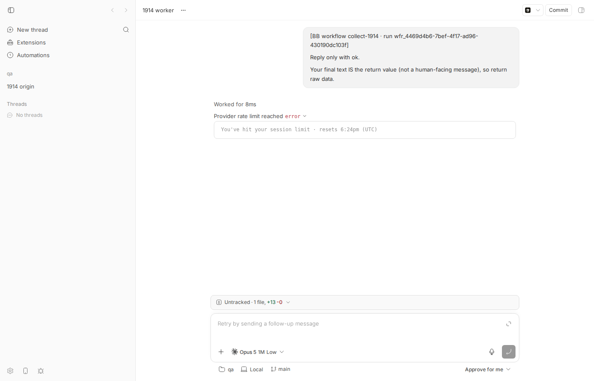
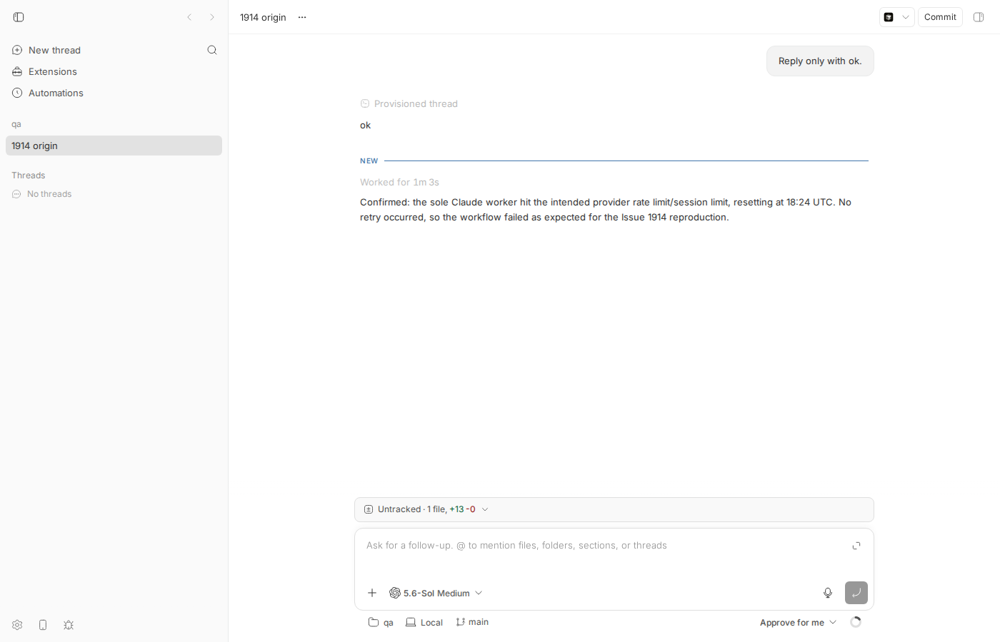

#1914 · A rate-limited workflow call reports only 'Workflow worker failed' — the 429 is hidden in a child thread
Verdict: REPRODUCED · Root-cause confidence: high
1. TL;DR
When a workflow worker thread dies because the provider rejected the request (here: Claude Code 429 "session limit"), bb workflows status/history, the run record, and the completion notification sent back to the origin agent all say only Workflow worker failed. The 429 details exist, but only as a provider/error event (with errorInfo { category: "rate-limit", providerCode: "rate_limit_event", httpStatusCode: 429 }) inside the hidden child thread.
The actual defect is in the server, not in the workflows plugin. The plugin-facing thread.failed event is built by getLastThreadErrorMessage(), which reads only system/error rows. A provider-originated failure is persisted as provider/error + turn/completed status=failed and never writes a system/error row, so thread.failed fires with error: null. The workflows plugin then falls back to error ?? "Workflow worker failed". A side effect: the workflows plugin's own transient-provider retry classifier (which matches /rate.?limit|429/ on the error text) never sees the real text, so it is dead for every provider-originated failure. The automations plugin has the identical problem ("Turn failed").
Reproduced end to end on a dev instance by pointing Claude Code at a fake Anthropic endpoint that answers 429 with the unified rate-limit headers: the run fails in ~4 s with "error": "Workflow worker failed" while the child thread holds the full 429. Two failing vitest repros (server seam + workflows plugin) are included, plus a small prototype patch that makes the server test pass.
2. Claims vs findings
| Claim from the issue | Status | Evidence |
|---|---|---|
A call that dies on a provider 429 surfaces as Workflow worker failed in bb workflows status and history | Verified | Live run wfr_4469d4b6…: status JSON "error": "Workflow worker failed", call record "error": "Workflow worker failed" (section 4, step 6/7). |
The real cause is present only in the hidden child thread (provider/rateLimits/updated + provider/error with category: rate-limit, providerCode: rate_limit_event, httpStatusCode: 429) | Verified | Child thr_u982areftg (visibility hidden, status error) events 6 and 10 carry exactly those fields; no system/error row exists (section 4, step 8). |
| The call was dead ~3.5 s in | Verified (analogous) | Our call: startedAt 1787153297760 → finishedAt 1787153301251 = 3.49 s. |
| Not a one-off: a second run failed 13 of 29 calls the same way | Unverified | We did not have the reporter's records; but the mechanism is deterministic (any provider-originated failure on any provider takes this path), so it is expected. |
Workflow worker failed is indistinguishable from a bb-side crash | Verified | The identical string is also what a null-error thread.failed yields for any other provider error (auth, bad request, context overflow). Only bb-side system/errors (process exit, watchdog, command failure) propagate text. The origin-thread notification also says just Error: Workflow worker failed and the origin agent spent a turn investigating (section 4, step 9 and screenshot). |
fetch failed comes from a bb server stall | Unverified | Not investigated here; out of scope. |
Suggested fix: propagate child's provider/error (category/providerCode/httpStatusCode) into the call error | Agree, but at the server layer | The info must reach the thread.failed payload (server), not be dug out by the workflows plugin. See section 6. |
3. Environment
- bb monorepo worktree at
0f6759a74(based81fee6fplus two unrelated commits: #1912 thread TOC breakpoint, #1923 tasks presets); bb-app version 0.39.0;git log d81fee6f..origin/main -- plugins/workflows apps/server/src/services/plugins apps/server/src/services/threads/thread-data.tsis empty → not fixed on main. - Linux 7.0.0-29-generic (Ubuntu), node v24.18.0, Claude Code CLI 2.1.235, codex-cli 0.148.0 (origin thread only).
- Own dev instance: App
http://localhost:11386, Serverhttp://localhost:19386, Host daemon127.0.0.1:27386, data dir~/.bb-dev/projects-bb-.claude-worktrees-wf_d5c47f31-487-6-484bd182cef1(deleted at cleanup). - Fake Anthropic API:
node fake-429.mjs 45929, injected withANTHROPIC_BASE_URL=http://127.0.0.1:45929exported beforescripts/bb-dev-app current(verified present in the host-daemon process environment).
4. Minimal reproduction
A. Unit-level (fastest, no provider needed)
- Copy issue-1914-thread-failed-provider-error.test.ts to
apps/server/test/services/plugins/and run it fromapps/server:pnpm exec vitest run test/services/plugins/issue-1914-thread-failed-provider-error.test.ts. It installs an observer plugin, seeds an active claude-code thread, and POSTs the exact four events the claude-code provider emits for a hard rate-limit rejection through the real/internal/session/eventsseam.expected: thread.failed payload.error describes the 429 actual: RUN v4.1.1 /home/sawyer/projects/bb/.claude/worktrees/wf_d5c47f31-487-6/apps/server ❯ |@bb/server| test/services/plugins/issue-1914-thread-failed-provider-error.test.ts (1 test | 1 failed) 264ms × carries the provider/error (429 rate limit) detail to plugin thread.failed handlers 263ms ⎯⎯⎯⎯⎯⎯⎯ Failed Tests 1 ⎯⎯⎯⎯⎯⎯⎯ FAIL |@bb/server| test/services/plugins/issue-1914-thread-failed-provider-error.test.ts > issue #1914: thread.failed error for provider-originated failures > carries the provider/error (429 rate limit) detail to plugin thread.failed handlers AssertionError: expected null not to be null ❯ test/services/plugins/issue-1914-thread-failed-provider-error.test.ts:158:38 156| // ... but `error` must describe the 429. On main it is `null`, … 157| // workflows plugin shows "Workflow worker failed". 158| expect(recorded[0]?.error).not.toBeNull(); | ^ 159| expect(recorded[0]?.error).toMatch(/rate.?limit|429|session limi… 160| } finally { ⎯⎯⎯⎯⎯⎯⎯⎯⎯⎯⎯⎯⎯⎯⎯⎯⎯⎯⎯⎯⎯⎯⎯⎯[1/1]⎯ Test Files 1 failed (1) Tests 1 failed (1) Start at 15:32:06 Duration 2.84s (transform 1.43s, setup 0ms, import 2.49s, tests 264ms, environment 0ms)The thread does reach statuserrorandthread.failedfires, buterrorisnull. - Copy issue-1914-worker-failed.test.ts to
plugins/workflows/src/and runpnpm exec vitest run src/issue-1914-worker-failed.test.tsfromplugins/workflows. It feeds thatnullinto the service exactly asserver.tsdoes:RUN v4.1.1 /home/sawyer/projects/bb/.claude/worktrees/wf_d5c47f31-487-6/plugins/workflows stdout | src/issue-1914-worker-failed.test.ts > issue #1914: workflow call error for a rate-limited worker > surfaces the provider failure instead of 'Workflow worker failed' [issue-1914] call.error = "Workflow worker failed" [issue-1914] run.error = "Workflow worker failed" [issue-1914] retries = 0 ❯ src/issue-1914-worker-failed.test.ts (1 test | 1 failed) 289ms × surfaces the provider failure instead of 'Workflow worker failed' 289ms ⎯⎯⎯⎯⎯⎯⎯ Failed Tests 1 ⎯⎯⎯⎯⎯⎯⎯ FAIL src/issue-1914-worker-failed.test.ts > issue #1914: workflow call error for a rate-limited worker > surfaces the provider failure instead of 'Workflow worker failed' AssertionError: expected 'Workflow worker failed' not to be 'Workflow worker failed' // Object.is equality ❯ src/issue-1914-worker-failed.test.ts:146:29 144| 145| // Expected: the call error names the rate limit (category/429/mes… 146| expect(call?.error).not.toBe("Workflow worker failed"); | ^ 147| expect(call?.error ?? "").toMatch(/rate.?limit|429/i); 148| ⎯⎯⎯⎯⎯⎯⎯⎯⎯⎯⎯⎯⎯⎯⎯⎯⎯⎯⎯⎯⎯⎯⎯⎯[1/1]⎯ Test Files 1 failed (1) Tests 1 failed (1) Start at 15:32:09 Duration 621ms (transform 134ms, setup 0ms, import 249ms, tests 289ms, environment 0ms)
B. Live end-to-end (real claude-code process, real 429)
- Start a fake Anthropic API that answers every call with HTTP 429 and the unified rate-limit headers (fake-429.mjs):
node fake-429.mjs 45929. Sanity check:ANTHROPIC_BASE_URL=http://127.0.0.1:45929 claude -p "Reply only with ok." --output-format stream-json --verboseprints arate_limit_eventwithstatus: "rejected"immediately (no retries). - Start a dev instance with the override in its environment:
export ANTHROPIC_BASE_URL=http://127.0.0.1:45929; scripts/bb-dev-app current. Enable the workflows plugin:curl -X POST $BB_SERVER_URL/api/v1/plugins/workflows/enable. - Create a scratch git repo and a project (
POST /api/v1/projectswith alocal_pathsource), then spawn an origin thread with a cheap provider:bb thread spawn --project <proj> --environment /tmp/bb-1914/qa-repo --provider codex --prompt "Reply only with ok." --title "1914 origin"→thr_4nt62zknyn(idle, envenv_wbxyk8aus8). - Put this workflow inside the workspace (collect.workflow.js):
export const meta = { name: "collect-1914", description: "Issue 1914 repro: one claude-code worker that hits a 429", phases: [{ title: "Collect", detail: "Single worker" }], }; phase("Collect"); const out = await agent("Reply only with ok.", { provider: "claude-code", model: "claude-opus-5[1m]", reasoningLevel: "low", title: "1914 worker", }); return out; - From the origin thread context (
BB_THREAD_ID=thr_4nt62zknyn BB_PROJECT_ID=<proj> BB_ENVIRONMENT_ID=env_wbxyk8aus8), runbb workflows run --file /tmp/bb-1914/qa-repo/collect.workflow.js:{"runId":"wfr_4469d4b6-7bef-4f17-ad96-430190dc103f","name":"collect-1914","status":"queued"} bb workflows status wfr_4469d4b6-7bef-4f17-ad96-430190dc103fa few seconds later:expected: something like "error": "rate limited (429): You've hit your session limit · resets 6:24pm (UTC)" actual (excerpt; full JSON in appendix): "status": "failed", "phase": "Collect", "error": "Workflow worker failed", "calls": { "total": 1, "queued": 0, "running": 0, "succeeded": 0, "failed": 1, "cancelled": 0 }, "startedAt": 1787153296809, "finishedAt": 1787153301255bb workflows history wfr_4469d4b6-…call record (excerpt):{ "id": "wfc_50c38b22-9297-4105-ba8c-9628efaad62a", "callIndex": 0, "resolvedProvider": "claude-code", "resolvedModel": "claude-opus-5[1m]", "status": "failed", "childThreadId": "thr_u982areftg", "providerRetryAttempts": 0, "error": "Workflow worker failed", "startedAt": 1787153297760, "finishedAt": 1787153301251 }- The hidden child thread holds the real cause.
sqlite3 bb.db "select sequence,type from events where thread_id='thr_u982areftg' order by sequence":1|client/turn/requested 2|client/thread/start 3|thread/identity 4|turn/started 5|turn/input/accepted 6|provider/rateLimits/updated 7|item/completed 8|thread/contextWindowUsage/updated 9|thread/tokenUsage/updated 10|provider/error 11|turn/completed
Nosystem/errorrow.bb thread log thr_u982areftg --json(relevant events):provider/rateLimits/updated {"providerThreadId": "3f6e15b2-0592-499a-a9db-6c66c0613e8a", "rateLimits": {"providerId": "claude-code", "status": "blocked", "kind": "subscription-window", "windows": [{"providerKey": "five_hour", "label": "Five-hour limit", "status": "blocked", "resetsAtMs": 1787163875000}], "reachedReason": "five_hour", "overageStatus": "rejected", "overageReason": "org_level_disabled"}} item/completed {"providerThreadId": "3f6e15b2-0592-499a-a9db-6c66c0613e8a", "item": {"type": "agentMessage", "id": "454199c6-e204-4fcd-ab42-34ba257aa607", "text": "You've hit your session limit \u00b7 resets 6:24pm (UTC)"}} provider/error {"providerThreadId": "3f6e15b2-0592-499a-a9db-6c66c0613e8a", "message": "Provider error", "detail": "You've hit your session limit \u00b7 resets 6:24pm (UTC)", "errorInfo": {"category": "rate-limit", "providerCode": "rate_limit_event", "httpStatusCode": 429}} turn/completed {"providerThreadId": "3f6e15b2-0592-499a-a9db-6c66c0613e8a", "status": "failed", "providerCheckpointId": "3b923597-4608-4c0e-83e2-d65ba47b2716"} - The notification the workflows plugin sent back to the origin agent is equally opaque (event 19 on the origin thread):
1|client/turn/requested|{"direction":"outbound","source":"spawn","initiator":"user","request":{"method":"thread/start","params":{}},"requestId":"creq_4bqp7awiab","senderThreadId":null,"input":[{"type":"text","text":"Reply only with ok.","mentions":[]}],"target":{"kind":"thread-start"},"execution":{"model":"gpt-5.6-sol","permissionMode":"auto","reasoningLevel":"medium","serviceTier":"default","source":"client/turn/requested"}} 19|client/turn/requested|{"direction":"outbound","source":"tell","initiator":"user","request":{"method":"turn/start","params":{}},"requestId":"creq_aqsy3q2ufk","senderThreadId":null,"input":[{"type":"text","text":"[BB workflow finished · wfr_4469d4b6-7bef-4f17-ad96-430190dc103f]\n\nRun wfr_4469d4b6-7bef-4f17-ad96-430190dc103f (collect-1914) failed.\nError: Workflow worker failed\nRun `bb workflows status wfr_4469d4b6-7bef-4f17-ad96-430190dc103f` for authoritative details.","mentions":[],"visibility":"agent-only"}],"target":{"kind":"new-turn"},"execution":{"model":"gpt-5.6-sol","permissionMode":"auto","reasoningLevel":"medium","serviceTier":"default","source":"client/turn/requested"}}The origin (codex) agent then spent a turn investigating ("Worked for 1m 3s" in the screenshot) — the exact cost the issue describes.

thr_u982areftg in the app: "Provider rate limit reached · error — You've hit your session limit · resets 6:24pm (UTC)". This is the only place the 429 is visible.
thr_4nt62zknyn after the workflow notification ("Error: Workflow worker failed"); the agent had to go digging before it could say the worker was rate limited.Repro files: 1914/repro/ (tests, fake API, workflow, helper scripts, raw outputs, prototype patch).
5. Root cause
Chain:
- The claude-code provider plugin translates a hard rate-limit rejection into
provider/rateLimits/updated, aprovider/errorcarryingerrorInfo, and aturn/completed status: "failed"(no error text on the turn/completed):plugins/provider-claude-code/src/event-translation.ts:1466and therate_limit_eventcase atplugins/provider-claude-code/src/event-translation.ts:1526. Nothing on this path emitssystem/error; that event type is reserved for bb-side failures (provider process exitapps/host-daemon/src/runtime-manager.ts:1282, turn-start watchdogpackages/agent-runtime/src/runtime.ts:392, command failuresapps/server/src/services/threads/thread-lifecycle.ts:1712). - The server turns
turn/completed failedinto the lifecycle eventrun.failed→ thread statuserror:apps/server/src/internal/turn-completed-events.ts:21. - Entering
erroremits the plugin eventthread.failed:apps/server/src/services/plugins/plugin-thread-events.ts:44→apps/server/src/services/plugins/plugin-service.ts:1473, whoseerrorfield isgetLastThreadErrorMessage(db, thread.id). getLastThreadErrorMessageonly looks atsystem/errorrows:apps/server/src/services/threads/thread-data.ts:167viapackages/db/src/data/events.ts:3049(eq(events.type, "system/error")). The contract even documents this:packages/plugin-sdk/src/backend-contract.ts:149— "error is the latest system/error event message, when one exists". So for every provider-originated failure the payload iserror: null.- The workflows plugin maps
nullto the generic string:plugins/workflows/src/server.ts:233→plugins/workflows/src/service.ts:1519failThreadCall(threadId, error ?? "Workflow worker failed"). That string becomes the call error, the run error (wakeCallrejects with it,plugins/workflows/src/service.ts:900), the status/history output, and the origin notification.
Deeper consequence: the workflows plugin already contains a transient-provider retry path keyed on the error text — plugins/workflows/src/service.ts:104 matches /rate.?limit/, 429, overload, etc., and plugins/workflows/src/service.ts:866 retries up to two times. Because the text never arrives for provider-originated failures, that classifier only ever sees "Workflow worker failed", so it is effectively dead for the cases it was written for (our call shows providerRetryAttempts: 0). The same null reaches the automations plugin, which records "Turn failed" (plugins/automations/src/run.ts:325).
Why the report's two cases look alike: a bb-side stall/crash writes system/error and therefore propagates real text (e.g. "Provider process exited…"), while a provider 429 propagates nothing; the workflows fallback string is what makes them look alike, but the missing data is upstream of it.
6. Proposed fix (first principles)
Fix at the server boundary, where the data already lives, so every plugin consumer (workflows, automations, third-party) benefits:
- packages/db: add a query that returns the latest failure-describing row for a thread across
system/errorandprovider/error(ideally restricted to events at/after the last rootturn/startedso a stalewillRetry: trueprovider error from an earlier, recovered turn cannot leak into a later unrelated failure). - apps/server
getLastThreadErrorMessage: formatprovider/errorasdetail ?? messageplus(category, HTTP nnn, providerCode). Optionally extend thethread.failedpayload with a structurederrorInfo: ProviderErrorInfo | null(and the rate-limitresetsAtMsfrom the latestprovider/rateLimits/updated) so plugins can render "rate limited (429), resets HH:MM" without parsing text. A new payload field is new public plugin API → follow the AGENTS.mdexperimental_/docs/api_to_audit.mdrule, and update the doc comment inbackend-contract.ts. No host-daemon wire change is involved (server-internal), so noHOST_DAEMON_PROTOCOL_VERSIONbump. - plugins/workflows: keep
error ?? "Workflow worker failed"as the last-resort fallback, but also decide retry policy from the structured category: a 429 with a blocked subscription window resetting hours away should not burn the two 1 s/4 s retries (and should probably fail the call immediately with a clear "rate limited, resets …" message), whereas overload/5xx should.
A minimal prototype of steps 1–2 (prototype-fix.patch, 84 lines) makes the server repro test pass together with the existing plugin-thread-events.test.ts (12/12) and typechecks @bb/server; it is not scoped to the failing turn yet, which is the one thing to add before shipping:
diff --git a/apps/server/src/services/threads/thread-data.ts b/apps/server/src/services/threads/thread-data.ts
index 9cc53bc57..59394b3ea 100644
--- a/apps/server/src/services/threads/thread-data.ts
+++ b/apps/server/src/services/threads/thread-data.ts
@@ -1,7 +1,7 @@
import {
findStoredEventRow as findStoredEventRowRecord,
getLatestThreadOutputEventRow,
- getLatestThreadSystemErrorEventRow,
+ getLatestThreadFailureEventRow,
listStoredEventRows as listStoredEventRowRecords,
} from "@bb/db";
import type { DbConnection, StoredEventRow } from "@bb/db";
@@ -169,8 +169,20 @@ export function getLastThreadErrorMessage(
db: DbConnection,
threadId: string,
): string | null {
- const row = getLatestThreadSystemErrorEventRow(db, { threadId });
+ const row = getLatestThreadFailureEventRow(db, { threadId });
if (!row) return null;
const eventRow = parseStoredEventRow(row);
- return eventRow.type === "system/error" ? eventRow.data.message : null;
+ if (eventRow.type === "system/error") return eventRow.data.message;
+ if (eventRow.type === "provider/error") {
+ const { message, detail, errorInfo } = eventRow.data;
+ const text = detail && detail.length > 0 ? detail : message;
+ if (!errorInfo) return text;
+ const parts: string[] = [errorInfo.category];
+ if (errorInfo.httpStatusCode !== null) {
+ parts.push(`HTTP ${errorInfo.httpStatusCode}`);
+ }
+ if (errorInfo.providerCode !== null) parts.push(errorInfo.providerCode);
+ return `${text} (${parts.join(", ")})`;
+ }
+ return null;
}
diff --git a/packages/db/src/data/events.ts b/packages/db/src/data/events.ts
index e7de63b63..1f5c55eea 100644
--- a/packages/db/src/data/events.ts
+++ b/packages/db/src/data/events.ts
@@ -3063,6 +3063,31 @@ export function getLatestThreadSystemErrorEventRow(
);
}
+/**
+ * Latest failure-describing event for a thread: either a bb-side
+ * `system/error` or a provider-originated `provider/error` (for example a
+ * 429 rate limit), whichever was stored last.
+ */
+export function getLatestThreadFailureEventRow(
+ db: DbConnection,
+ args: GetLatestThreadSystemErrorEventRowArgs,
+): StoredEventRow | null {
+ return (
+ db
+ .select(storedEventRowFields)
+ .from(events)
+ .where(
+ and(
+ eq(events.threadId, args.threadId),
+ inArray(events.type, ["system/error", "provider/error"]),
+ ),
+ )
+ .orderBy(desc(events.sequence))
+ .limit(1)
+ .get() ?? null
+ );
+}
+
export function getLatestThreadSequence(
db: DbConnection,
args: GetLatestThreadSequenceArgs,
diff --git a/packages/db/src/data/index.ts b/packages/db/src/data/index.ts
index 6e599d718..c14ca5415 100644
--- a/packages/db/src/data/index.ts
+++ b/packages/db/src/data/index.ts
@@ -339,6 +339,7 @@ export {
getStoredTurnRequestEventForTurn,
getLatestThreadOutputEventRow,
getLatestThreadSystemErrorEventRow,
+ getLatestThreadFailureEventRow,
getLatestThreadSequence,
getLatestStoredEventRowByType,
insertEvents,
Risk: the workflows retry classifier will start matching rate-limit text and retry twice (5 s total) before failing; harmless but wasteful, hence step 3.
7. PR review
No open PRs are linked to this issue.
8. Related issues
- Automations plugin shows the same
"Turn failed"for provider-originated failures (samethread.failedpayload) — not filed separately; fixing the server path fixes both. - Workflows transient-provider retry (#733 introduced
isRetryableProviderFailure) is dead for provider-originated failures for the same reason.
9. Appendix
Full bb workflows status output
{
"id": "wfr_4469d4b6-7bef-4f17-ad96-430190dc103f",
"projectId": "proj_wqncx5cr2y",
"originThreadId": "thr_4nt62zknyn",
"environmentId": "env_wbxyk8aus8",
"originProvider": "codex",
"originProviderTruncated": false,
"originModel": "gpt-5.6-sol",
"originModelTruncated": false,
"originReasoningLevel": "medium",
"originReasoningLevelTruncated": false,
"originPermissionMode": "auto",
"originPermissionModeTruncated": false,
"name": "collect-1914",
"nameTruncated": false,
"sourceHash": "a372a4af11f824d5cee34119b02be145fe918dcb47847cc8020b6b77f6a552b9",
"sourceBytes": 372,
"settings": {
"maxActiveRuns": 4,
"maxConcurrentAgents": 8,
"maxAgentCalls": 100,
"totalRunTimeoutMs": 86400000,
"retentionDays": 30,
"maxNotificationBytes": 16384
},
"status": "failed",
"phase": "Collect",
"phaseTruncated": false,
"resumedFromRunId": null,
"result": null,
"resultAvailable": false,
"resultOmitted": false,
"error": "Workflow worker failed",
"errorTruncated": false,
"calls": {
"total": 1,
"queued": 0,
"running": 0,
"succeeded": 0,
"failed": 1,
"cancelled": 0
},
"notification": {
"outcome": "delivered",
"attemptCount": 1,
"nextAttemptAt": null,
"error": null,
"errorTruncated": false
},
"createdAt": 1787153296600,
"startedAt": 1787153296809,
"finishedAt": 1787153301255,
"history": {
"format": "jsonl",
"pageUsage": "bb workflows history wfr_4469d4b6-7bef-4f17-ad96-430190dc103f --cursor 0 --limit 10",
"fileUsage": "mkdir -p \"$BB_THREAD_STORAGE/workflows\" && bb workflows history wfr_4469d4b6-7bef-4f17-ad96-430190dc103f --cursor 0 --limit 10 > \"$BB_THREAD_STORAGE/workflows/wfr_4469d4b6-7bef-4f17-ad96-430190dc103f.jsonl\""
}
}Fake 429 server log (the extra POSTs after the first are from the claude-code process's own retries/housekeeping; the worker turn itself failed on the first rejected response)
[fake-429] listening on 45929 [fake-429] #1 HEAD /api/hello (0 bytes) [fake-429] #2 POST /v1/messages?beta=true (111264 bytes) [fake-429] #3 HEAD /api/hello (0 bytes) [fake-429] #4 POST /v1/messages?beta=true (99102 bytes) [fake-429] #5 HEAD /api/hello (0 bytes) [fake-429] #6 POST /v1/messages?beta=true (99102 bytes) [fake-429] #7 HEAD /api/hello (0 bytes) [fake-429] #8 POST /v1/messages?beta=true (99102 bytes) [fake-429] #9 HEAD /api/hello (0 bytes) [fake-429] #10 POST /v1/messages?beta=true (99102 bytes) [fake-429] #11 HEAD /api/hello (0 bytes) [fake-429] #12 HEAD /api/hello (0 bytes) [fake-429] #13 POST /v1/messages?beta=true (99965 bytes) [fake-429] #14 POST /v1/messages?beta=true (136716 bytes) [fake-429] #15 HEAD /api/hello (0 bytes) [fake-429] #16 HEAD /api/hello (0 bytes) [fake-429] #17 HEAD /api/hello (0 bytes) [fake-429] #18 HEAD /api/hello (0 bytes) [fake-429] #19 HEAD /api/hello (0 bytes) [fake-429] #20 HEAD /api/hello (0 bytes) [fake-429] #21 HEAD /api/hello (0 bytes) [fake-429] #22 HEAD /api/hello (0 bytes) [fake-429] #23 POST /v1/messages?beta=true (99102 bytes) [fake-429] #24 POST /v1/messages?beta=true (99965 bytes)
Server repro test source
/**
* Repro for get-bb/bb#1914.
*
* A provider-originated failure (Claude Code 429 "rate_limit_event") is
* persisted as `provider/rateLimits/updated` + `provider/error` (with
* errorInfo) + `turn/completed status=failed`. No `system/error` row is ever
* written on that path. The plugin `thread.failed` payload builds its `error`
* field ONLY from the latest `system/error` row, so plugin consumers such as
* the workflows plugin receive `error: null` and fall back to the opaque
* "Workflow worker failed" string.
*
* Events are ingested through the REAL host-daemon seam
* (POST /internal/session/events), which is what applies `run.failed` and
* fires the plugin event.
*/
import { mkdir, mkdtemp, rm, writeFile } from "node:fs/promises";
import { tmpdir } from "node:os";
import { join } from "node:path";
import { getThread } from "@bb/db";
import { threadScope, turnScope } from "@bb/domain";
import { groupHostDaemonEvents } from "@bb/host-daemon-contract";
import { describe, expect, it, vi } from "vitest";
import {
createTestDaemonEventEnvelope,
internalAuthHeaders,
} from "../../helpers/commands.js";
import { seedThreadFixture } from "../../helpers/seed.js";
import { createTestAppHarness } from "../../helpers/test-app.js";
interface RecordedFailedPayload {
thread: { id: string; status: string };
error: string | null;
}
const globals = globalThis as Record<string, unknown>;
describe("issue #1914: thread.failed error for provider-originated failures", () => {
it("carries the provider/error (429 rate limit) detail to plugin thread.failed handlers", async () => {
const recorded: RecordedFailedPayload[] = [];
globals.__issue1914Failed = recorded;
const harness = await createTestAppHarness();
const workDir = await mkdtemp(join(tmpdir(), "bb-issue-1914-"));
const rootDir = join(workDir, "bb-plugin-observer");
await mkdir(rootDir, { recursive: true });
await writeFile(
join(rootDir, "package.json"),
JSON.stringify({
name: "bb-plugin-observer",
version: "0.1.0",
bb: {
name: "Observer fixture",
description: "Thread events plugin fixture.",
branding: { icon: "Zap" },
server: "./server.ts",
},
}),
);
await writeFile(
join(rootDir, "server.ts"),
`
export default function plugin(bb: any) {
bb.events.on("thread.failed", (payload: any) => {
(globalThis as any).__issue1914Failed.push(payload);
});
}
`,
);
const entry = await harness.pluginService.installPath(rootDir);
expect(entry.status).toBe("running");
try {
const { host, session, thread } = seedThreadFixture(harness, {
thread: { status: "active", providerId: "claude-code" },
});
const turnId = "turn-1914";
// Exactly the event shapes the claude-code provider plugin emits for a
// hard rate-limit rejection (plugins/provider-claude-code/src/event-translation.ts
// `case "rate_limit_event"` + the following `result` message).
const response = await harness.app.request("/internal/session/events", {
method: "POST",
headers: internalAuthHeaders(harness, { hostId: host.id }),
body: JSON.stringify({
sessionId: session.id,
eventGroups: groupHostDaemonEvents([
createTestDaemonEventEnvelope({
threadId: thread.id,
event: {
type: "turn/started",
threadId: thread.id,
providerThreadId: "claude-session-1",
scope: turnScope(turnId),
},
}),
createTestDaemonEventEnvelope({
threadId: thread.id,
event: {
type: "provider/rateLimits/updated",
threadId: thread.id,
providerThreadId: "claude-session-1",
scope: threadScope(),
rateLimits: {
providerId: "claude-code",
status: "blocked",
kind: "subscription-window",
windows: [
{
providerKey: "five_hour",
label: "5h",
status: "blocked",
resetsAtMs: 1_800_000_000_000,
},
],
reachedReason: "five_hour",
overageStatus: "rejected",
overageReason: "org_level_disabled",
},
},
}),
createTestDaemonEventEnvelope({
threadId: thread.id,
event: {
type: "provider/error",
threadId: thread.id,
providerThreadId: "claude-session-1",
scope: turnScope(turnId),
message: "Provider error",
detail:
"You've hit your session limit - resets 2:40pm (rate_limit_event, HTTP 429)",
errorInfo: {
category: "rate-limit",
providerCode: "rate_limit_event",
httpStatusCode: 429,
},
},
}),
createTestDaemonEventEnvelope({
threadId: thread.id,
event: {
type: "turn/completed",
threadId: thread.id,
providerThreadId: "claude-session-1",
scope: turnScope(turnId),
status: "failed",
},
}),
]),
}),
});
expect(response.status).toBe(200);
// The thread really did land in `error` ...
expect(getThread(harness.db, thread.id)?.status).toBe("error");
// ... and the plugin got a thread.failed ...
await vi.waitFor(() => expect(recorded).toHaveLength(1));
expect(recorded[0]?.thread.id).toBe(thread.id);
expect(recorded[0]?.thread.status).toBe("error");
// ... but `error` must describe the 429. On main it is `null`, so the
// workflows plugin shows "Workflow worker failed".
expect(recorded[0]?.error).not.toBeNull();
expect(recorded[0]?.error).toMatch(/rate.?limit|429|session limit/i);
} finally {
delete globals.__issue1914Failed;
await harness.pluginService.stop();
await rm(workDir, { recursive: true, force: true });
await harness.cleanup();
}
});
});
Workflows repro test source
/**
* Repro for get-bb/bb#1914 (workflows plugin side).
*
* The server fires `thread.failed` with `error: null` for provider-originated
* failures (see apps/server/test/services/plugins/issue-1914-*.test.ts). The
* workflows plugin then settles the call with the opaque string
* "Workflow worker failed", and its transient-provider retry path (which
* matches /rate.?limit|429/ on the error text) never fires.
*/
import { createFakePluginHost } from "@get-bb/plugin-sdk/testing";
import { afterEach, describe, expect, it } from "vitest";
import { getCall, getRunRequired, migrations } from "./data.js";
import { createWorkflowService } from "./service.js";
async function eventually(
assertion: () => void | Promise<void>,
timeoutMs = 3_000,
): Promise<void> {
const deadline = Date.now() + timeoutMs;
while (true) {
try {
await assertion();
return;
} catch (error) {
if (Date.now() >= deadline) throw error;
await new Promise((resolve) => setTimeout(resolve, 10));
}
}
}
function availableModel(model: string) {
return {
id: model,
model,
displayName: model,
description: "test",
supportedReasoningEfforts: [
{ reasoningEffort: "medium", description: "test" },
],
defaultReasoningEffort: "medium",
isDefault: true,
};
}
describe("issue #1914: workflow call error for a rate-limited worker", () => {
const hosts: Array<ReturnType<typeof createFakePluginHost>["harness"]> = [];
afterEach(async () => {
await Promise.all(hosts.map((host) => host.dispose()));
hosts.length = 0;
});
function setup() {
let childCount = 0;
const { bb, harness } = createFakePluginHost({
pluginId: "workflows",
sdk: {
threads: {
get: async ({ threadId }) =>
({
id: threadId,
environmentId: "environment-1",
providerId: "claude-code",
status: threadId === "origin" ? "idle" : "working",
}) as never,
defaultExecutionOptions: async () => ({
model: "model-a",
reasoningLevel: "medium",
permissionMode: "accept-edits",
serviceTier: "default",
source: "default",
}),
spawn: async () => {
childCount += 1;
return { id: `child-${childCount}` } as never;
},
send: async () => ({ ok: true }),
stop: async () => ({ ok: true }),
},
providers: {
list: async () => [
{
id: "claude-code",
displayName: "Claude Code",
logoUrl: null,
available: true,
capabilities: {
supportsThreadArchive: true,
supportsThreadRename: true,
supportsServiceTier: true,
supportsNativeUserQuestion: false,
supportsFork: true,
permissionModes: ["accept-edits", "auto", "full"],
},
composerActions: [],
},
],
models: async () => ({
providers: [],
models: [availableModel("model-a")],
selectedOnlyModels: [],
modelLoadError: null,
}),
},
},
});
hosts.push(harness);
const db = bb.storage.database();
bb.storage.migrate(db, migrations);
const service = createWorkflowService(bb, db);
return { bb, db, service, harness, childCount: () => childCount };
}
it("surfaces the provider failure instead of 'Workflow worker failed'", async () => {
const test = setup();
const controller = new AbortController();
const worker = test.service.runWorker(controller.signal);
const run = await test.service.start({
projectId: "project-test",
originThreadId: "origin",
source: `export const meta = { name: "collect", description: "t" };
return await agent("Collect");`,
args: null,
resumedFromRunId: null,
});
await eventually(() => expect(test.childCount()).toBe(1));
// This is exactly what plugins/workflows/src/server.ts receives from
// bb.events.on("thread.failed") when the child hit a Claude 429:
// the server's payload has `error: null`.
test.service.onThreadFailed("child-1", null);
await eventually(() => {
expect(getRunRequired(test.db, run.id).status).toBe("failed");
});
const call = getCall(test.db, run.id, 0);
const runRow = getRunRequired(test.db, run.id);
// Document what main produces today:
// eslint-disable-next-line no-console
console.log("[issue-1914] call.error =", JSON.stringify(call?.error));
// eslint-disable-next-line no-console
console.log("[issue-1914] run.error =", JSON.stringify(runRow.error));
// eslint-disable-next-line no-console
console.log("[issue-1914] retries =", call?.providerRetryAttempts);
// Expected: the call error names the rate limit (category/429/message).
expect(call?.error).not.toBe("Workflow worker failed");
expect(call?.error ?? "").toMatch(/rate.?limit|429/i);
controller.abort();
await worker;
});
});
Fake Anthropic 429 server
// Fake Anthropic API that answers every request with HTTP 429 + the unified
// rate-limit headers Claude Code turns into a `rate_limit_event` (status
// "rejected"). Point Claude Code at it with ANTHROPIC_BASE_URL.
// node fake-429.mjs <port>
import http from "node:http";
const port = Number(process.argv[2] ?? 45929);
const resetsAt = Math.floor(Date.now() / 1000) + 3 * 3600;
let n = 0;
http
.createServer((req, res) => {
let body = "";
req.on("data", (c) => (body += c));
req.on("end", () => {
n += 1;
console.log(`[fake-429] #${n} ${req.method} ${req.url} (${body.length} bytes)`);
res.writeHead(429, {
"content-type": "application/json",
"anthropic-ratelimit-unified-status": "rejected",
"anthropic-ratelimit-unified-reset": String(resetsAt),
"anthropic-ratelimit-unified-5h-status": "rejected",
"anthropic-ratelimit-unified-5h-reset": String(resetsAt),
"anthropic-ratelimit-unified-representative-claim": "five_hour",
"anthropic-ratelimit-unified-overage-status": "rejected",
"anthropic-ratelimit-unified-overage-disabled-reason": "org_level_disabled",
"retry-after": "10800",
"request-id": `req_fake_${n}`,
});
res.end(
JSON.stringify({
type: "error",
error: {
type: "rate_limit_error",
message: "You've hit your session limit - resets 2:40pm",
},
request_id: `req_fake_${n}`,
}),
);
});
})
.listen(port, "127.0.0.1", () =>
console.log(`[fake-429] listening on ${port}`),
);
Commands run (abridged)
gh issue view 1914 --repo get-bb/bb --comments
pnpm install --frozen-lockfile --prefer-offline; pnpm exec turbo run build
git fetch origin main; git log d81fee6f..origin/main --oneline # 2 unrelated commits
# code trace
grep -rn "Workflow worker failed" plugins/workflows/src
grep -rn "thread.failed" apps/server/src packages/plugin-sdk/src plugins/*/src
# unit repros
cd apps/server && pnpm exec vitest run test/services/plugins/issue-1914-thread-failed-provider-error.test.ts
cd plugins/workflows && pnpm exec vitest run src/issue-1914-worker-failed.test.ts
# live repro
node /tmp/bb-reports/issues/1914/repro/fake-429.mjs 45929 &
ANTHROPIC_BASE_URL=http://127.0.0.1:45929 claude -p "Reply only with ok." --output-format stream-json --verbose
export ANTHROPIC_BASE_URL=http://127.0.0.1:45929; scripts/bb-dev-app current
curl -X POST http://localhost:19386/api/v1/plugins/workflows/enable
curl -X POST http://localhost:19386/api/v1/projects -d '{"name":"qa","source":{"type":"local_path","path":"/tmp/bb-1914/qa-repo","hostId":"host_nccjkbdw72"}}'
bb thread spawn --project proj_wqncx5cr2y --environment /tmp/bb-1914/qa-repo --provider codex --prompt "Reply only with ok." --title "1914 origin" --json
bb workflows validate --file /tmp/bb-1914/qa-repo/collect.workflow.js
bb workflows run --file /tmp/bb-1914/qa-repo/collect.workflow.js
bb workflows status wfr_4469d4b6-7bef-4f17-ad96-430190dc103f
bb workflows history wfr_4469d4b6-7bef-4f17-ad96-430190dc103f
bb thread show thr_u982areftg; bb thread log thr_u982areftg --json
sqlite3 <data-dir>/bb.db "select sequence,type from events where thread_id='thr_u982areftg' order by sequence"
# prototype fix
git apply /tmp/bb-reports/issues/1914/repro/prototype-fix.patch; pnpm exec turbo run typecheck --filter=@bb/server; (tests) ; git checkout -- .
# cleanup
pnpm dev:stop; rm -rf ~/.bb-dev/projects-bb-.claude-worktrees-wf_d5c47f31-487-6-484bd182cef1 /tmp/bb-1914